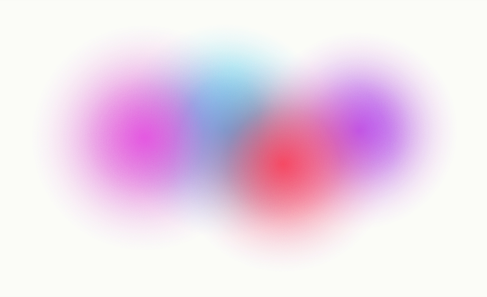

Making products make sense.
I design how products behave, moving between early ideas and mature systems to make experiences feel connected across products.
Creating Continuity Across Messaging
Stand-in for Selected Work — here to show the field bleeding past the fold and dissolving into the cream, the same as it does on the real page.